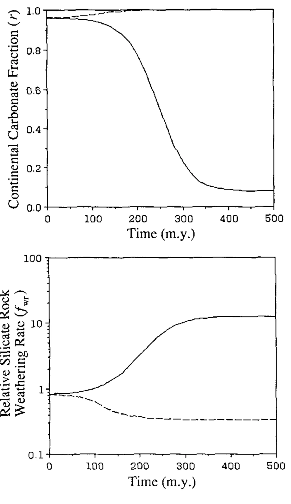

Continental-pelagic carbonate partitioning and the global carbonate-silicate cycle
Key finding. A carbonate-silicate cycle model that partitions burial between shallow-water and deep-water settings has two stable steady states — a continental mode with low metamorphic CO2 flux and a pelagic mode with high flux — and Cenozoic burial patterns suggest the Earth is moving from the continental toward the pelagic mode over roughly 100 million years, with a possible order-of-magnitude increase in the metamorphic CO2 flux to the atmosphere.

What question did this research address?
Carbonate rock is the largest surface reservoir of carbon, and it is buried in two very different places: shallow continental shelves, where it stays put and is weathered back off the continents, and the deep sea floor, where it rides down a subduction zone and is decarbonated by metamorphism.
Those two fates return carbon to the atmosphere on quite different timescales. This paper asked what the choice between them does to the carbonate-silicate cycle as a dynamical system.
What did we find?
The model partitions carbonate deposition between shallow-water and deep-water environments and includes carbon fluxes between mantle and lithosphere, which is what makes the two modes appear at all.
Holding total lithospheric carbonate mass constant yields two stable steady states. In the continental state, burial is mostly on shelves and the metamorphic CO2 flux to the atmosphere is low. In the pelagic state, burial is mostly deep-water and that flux is high.
Letting total lithospheric carbonate mass vary instead of holding it fixed makes the system oscillate between the two modes for reasonable parameter values.
The boundary between the two modes is sharp. With crustal carbonate mass held constant, an initial pelagic carbonate fraction below 3.8% sends the system to the continental mode, where all carbonate ends up in continental environments and silicate weathering settles at 0.34 times today's rate; above 3.8% it goes to the pelagic mode, with 92.1% of carbonate in pelagic environments and weathering 12.5 times today's rate.
Roughly 60% to 80% of carbonate accumulation happens today in deep water, yet deep-water carbonate is only 7% or 8% of the total carbonate rock mass — a mismatch implying the cycle is currently far from steady state.
Reading the Cenozoic increase in pelagic sedimentation through the model suggests a transition from the continental to the pelagic mode on a timescale of 100 million years, with an order-of-magnitude rise in metamorphic CO2 release as the consequence.
Why does it matter?
It makes the geography of carbonate burial a control on atmospheric CO2 rather than a bookkeeping detail. Where the carbon goes decides how quickly it comes back.
Two stable states in a system usually described as a single self-regulating feedback is a different picture of the long-term carbon cycle. A system with more than one attractor can be pushed between them, and does not simply return to where it started.
The Cenozoic trend it identifies — the rise of calcareous plankton moving carbonate burial off the shelves and into the deep sea — links an evolutionary event to the planet's long-term carbon budget.
Citation, data, and code
Ken Caldeira (1991). Continental-pelagic carbonate partitioning and the global carbonate-silicate cycle. Geology 19, 204-206.
Related
- How long does a carbon dioxide emission go on warming the planet?
- What does the deep-time record reveal about how the Earth system behaves?
- Enhanced Cenozoic chemical weathering and the subduction of pelagic carbonate (Caldeira, 1992)
- Long-term control of atmospheric carbon dioxide: low-temperature seafloor alteration or terrestrial silicate-rock weathering? (Caldeira, 1995)
- Carbon dioxide emissions from Deccan volcanism and a K/T boundary greenhouse effect (Caldeira and Rampino, 1990)